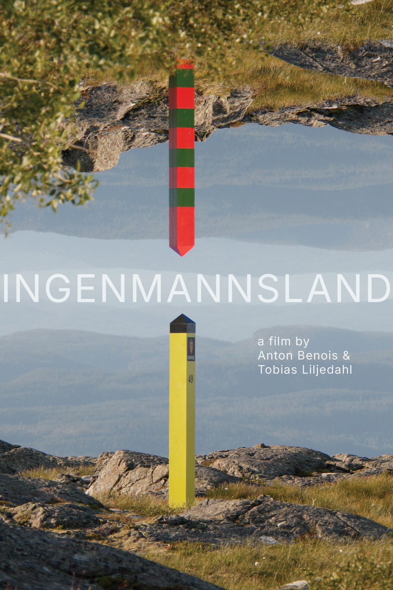

Ingenmannsland
A film · 2026

Ingenmannsland
Ingenmannsland
A film by Anton Benois & Tobias Liljedahl
At the Norwegian–Russian border, sections are reconstructed elsewhere in Norway. A drone circles the posts; a synthetic voice recites specifications. Ordinary objects acquire political authority.
2026
18 min 30 sec
4K video
Norway
18 min 30 sec
4K video
Norway